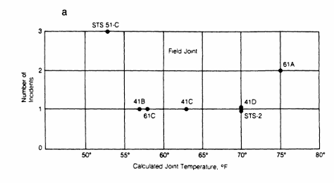

Instructor: Debasis Sengupta
Office / Department: ASU
Email: sdebasis@isical.ac.in
Marking Scheme:
Assignments: 20% | Midterm Test: 30% | End Semester: 50%
Contents
Case Study: The Challenger Disaster
Events and Main Points
- Jan 27, 1986 (Night before the launch):
- A 3-hour teleconference was held between:
- Morton Thiokol (manufacturer of the solid rocket motor)
- Marshall Space Flight Center (NASA design control)
- Kennedy Space Center
- Main topic: Effect of 31°F forecast temperature on O-ring performance
- A 3-hour teleconference was held between:
- Data Presented (Figure 1a):
- Each point = a shuttle flight with O-ring thermal distress
- X-axis = joint temperature, Y-axis = number of distressed O-rings
- Zero-failure flights were omitted, making the plot misleading
- From this “U-shaped” plot, some concluded there was no clear temperature effect
- Debate During Teleconference:
- Some recommended delaying launch until temperature was above 53°F, the lowest prior launch temperature (which had the most O-ring distress)
- Others believed data was inconclusive, though physical evidence suggested otherwise
- Roger Boisjoly (Thiokol engineer) insisted that temperature was a discriminator
- Final Recommendation by Morton Thiokol:
- Proceed with launch
- Stated: “Temperature data [are] not conclusive on predicting primary O-ring blowby.”
- Acknowledged colder O-rings become harder, take longer to seat, and thus are riskier
- Jan 28, 1986 (Launch Day):
- Challenger launched at 31°F
- Catastrophic failure occurred shortly after liftoff due to O-ring seal breach
- Aftermath – Rogers Commission Findings:
- Cause: Combustion gas leak through the right booster aft field joint
- Determined that the key analysis mistake was excluding zero-incident flights from the plot
- Including them shows a clear correlation between low temperature and O-ring failure
- Concluded that proper statistical analysis would have revealed the danger
The Challenger disaster underscores how flawed data visualization and the exclusion of critical information (zero-incident flights) led to a catastrophic decision. Proper statistical reasoning could have prevented the tragedy.

Figure: Visualization excluding zero-incident flights.

Figure: Correct visualization including zero-incident flights.